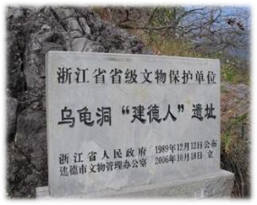
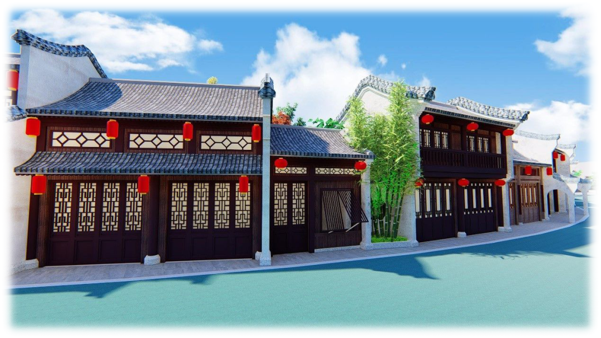

杭州历史
杭州，简称“杭”，位于中国东南沿海北部，自秦朝设县治以来已有2200多年的历史，曾是吴越国和南宋的都城。因风景秀丽，素有“人间天堂”的美誉。
杭州乌龟洞遗址古人类化石的发现证实五万年前就有古人类在杭州这片土地上生活，萧山跨湖桥遗址的发掘证实了早在8000年前就有现代人类在此繁衍生息，距今5000年前的余杭良渚文化被誉为“文明的曙光”。杭州夏商周属“扬州之域”。
秦统一六国后，在灵隐山麓设县治，称钱唐，属会稽郡。《史记·秦始皇本纪》中记载：“三十七年十月癸丑，始皇出游……过丹阳，至钱唐，临浙江，水波恶……”这是史籍最早记载“钱唐”之名。当时还是随江潮出没的海滩，西湖尚未形成。
西汉承秦制，杭州仍称钱唐。新莽时一度改钱唐为泉亭县；到了东汉，复置钱唐县，属吴郡。这时杭州农田水利兴修初具规模，并从宝石山至万松岭修筑了第一条海塘，西湖开始与海隔断，成为内湖。
三国、两晋、杭州属吴郡，归古扬州。东晋咸和元年（326年），印度佛教徒慧理在飞来峰下建了灵隐寺，是西湖最古的丛林建筑。梁太清三年（549年），侯景升钱唐县为临江郡。陈祯明元年（587年），又置钱唐郡，辖钱唐、于潜、富阳、新城、桐庐，属吴州。
隋王朝建立后，于开皇九年废郡为州，“杭州”之名第一次出现。并桐庐入钱唐县，下辖钱唐、余杭、富阳、盐官、于潜、武康六县。州治初在余杭，次年迁钱唐。开皇十一年，在凤凰山依山筑城，“周三十六里九十步”，这是最早的杭州城。
唐代，置杭州郡，旋改余杭郡，治所在钱唐。武德四年（621年）改“钱唐”为“钱塘”。太宗时属江南道，天宝元年（742年）复名余杭郡，属江南东道。
乾元元年（758年）又改为杭州，归浙江西道节度，州治一度在钱塘，辖钱塘、盐官、富阳、新城、余杭、临安、于潜、唐山八县。